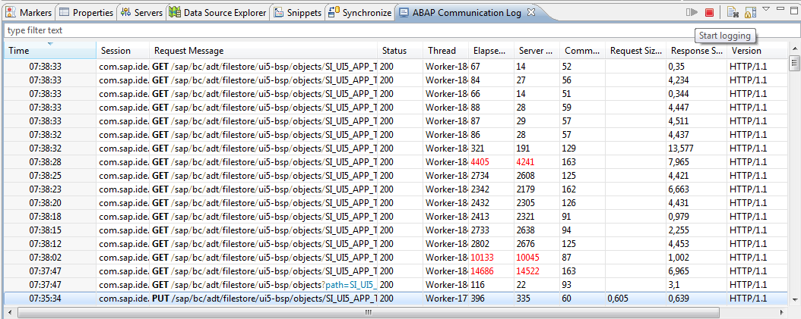
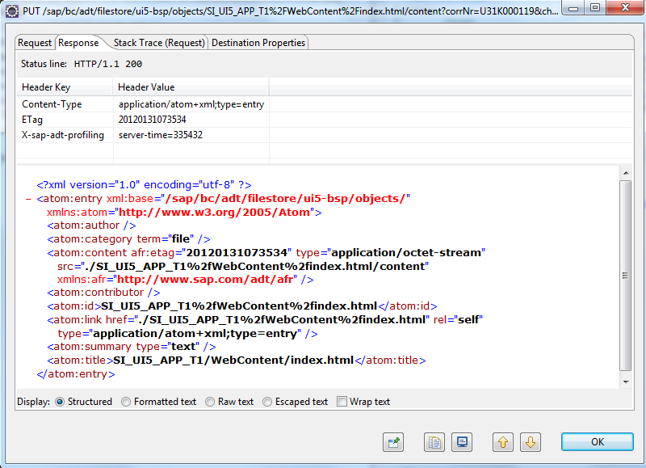

Using the ABAP Communication Log for Troubleshooting
For troubleshooting purposes, you can use the ABAP Communication Log to log all REST requests from and to the ABAP system.
Proceed as follows:
- To open the ABAP Communication Log view in Eclipse, choose
 Window
Window  Show View Others...
Show View Others...  and then choose ABAP ABAP Communication Log .
and then choose ABAP ABAP Communication Log . - To start the logging, choose Start logging. You can stop the logging by choosing Stop logging.
-
The ABAP Communication Log displays all requests between Eclipse and the connected ABAP system, giving you information about the HTTP method (GET, PUT, POST, DELETE), the query parameters of the request, and the HTTP status code.

If you click a request in the list, the details of this request are displayed (such as Request, Response, Stack Trace), giving you information about the HTTP header fields and the content of the request and the response.

.